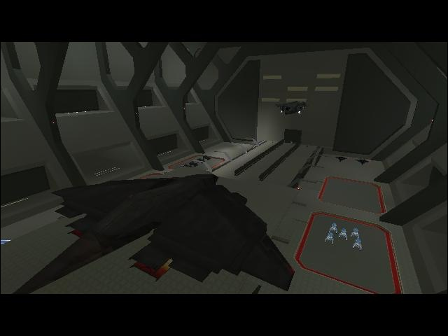

#6747 1 2006-02-09T15:51:19Z apache Wouldnt it be nice if the master chief got to fly a pelican?
whats your fav. vehicle?
PS poast your best screenshot
heres 1 of my good 1s

Attachment (lost): post-6-1139500279.jpg
#141293 2 2006-02-09T16:52:35Z AV_Ultima Lol, i have flown a pelican, download Halo CE, first you need retail halo 1. CE=Costum Edition, you can make your own levels and play other peoples over the internet, but i havnt figured out how to make them thought.
#141296 3 2006-02-09T16:57:09Z kai screw flying a pelican, i wanna be able to drive a scarab!!!
#141297 4 2006-02-09T16:58:06Z AV_Ultima OMG! That would be awsome! I cant beileve nobody on CE has thought about that.
Heres one of the bases inside a map call Hugeass.

Vehicles:
LS=Long Sword: Nuke bomb, rapid fire rockets, and machine gun.
MHog=Missle Hog: Has heat seaking missles.
Jet: Machinegun and rockets.
Takinawa: Can turn invisible if you press ctrl and has rockets and a machinegun.
Scorpian: It has a faster cannon and a deadly accurate machinegun and looks acctully like a scorpian.
Pelican: Machinegun and rockets.
Weapons:
Sniper rifle: Looks different and has a one shot kill bullet.
AR=Artillery Rifle: If you press left botton it fires out rocket, it has a zoom, and more accurate.
C4: A gaint blast kills anything in area, but the maker didnt put in the blast, you just fly away.
Misc:
Night Hugeass: There are hidden bottons arround the map, if you press them all in a certain way, everything turns black and you cant se a thing
#141316 5 2006-02-09T17:49:39Z wilderness Wouldnt it be nice if the master chief got to fly a pelican?
whats your fav. vehicle?
PS poast your best screenshot
heres 1 of my good 1s
That screen shot is from Bungie's promotional archive, you didn't take it.
J'ai adore Halo <3
I play Halo PC online all the time.
I was also a member of the #1 clan in europe (as recognized by clanbase) heh, bragbrag.
I seriously love that game.
#141320 6 2006-02-09T18:03:47Z Maniac This belongs in Other Games, not Messageboard Games. As such, I am moving it.
#141321 7 2006-02-09T18:04:52Z AV_Ultima I wish i was in clan...

I was almost in abunch but the server also ending up losing connection or im tryingout for one then all of a sudden Game has closed down. I hate that. Oh, and if any one knows what im talking about, whats up with the "Scrim 3 no heavens" thing, i dont get it.
#141338 8 2006-02-09T18:59:32Z kai you lucky basterds...with your really fast pc's able to play x-box type graphics...lucky s.o.b.'s...[/sarcasm]
seriosly though, i REEEEEEEEEEEAAAAAAAAAAAALLY want to get a pIIII lap top with wireless dsl modem and a bitchin sound and video card...*orgasms*...............oh yeeeah

#141367 9 2006-02-09T20:43:18Z sTEFANo I play the halo trial version on my computer online all the time
#141381 10 2006-02-09T21:00:50Z The_Juggler I'll have to admit that I am a big fan of Halo. Normally I steer away from whatever the current "buzz game" is but there is something that makes Halo fun and addictive.
Shooting games with non-retarded stories are rare as well. I have read outlines of the books about Halo and they do not sound as bad as other books of their type. Granted - books about video games are always trash; I must admit that I actually read one of the Resident Evil books (please don't ask why) and it was really stupid, it was like narrating the events of a game.
And there are crazy mods in Halo CE, I am always a fan of modding and playing mods.
...all that and I don't even own an XBOX
#141386 11 2006-02-09T21:24:52Z sTEFANo there are even roumurs on IGN about halo 2 for the pc
#141388 12 2006-02-09T21:32:03Z Maniac You know... I actually don't like Halo. Maybe it's just me, but I just can't figure out why the thing's so great as to become a cultural phenomenon. It's just an FPS!
#141442 13 2006-02-09T23:02:55Z Teh Dude Halo's story is a load of crap. I recently played through Halo for the Xbox in co-op mode with my flatmate. We were astounded at the arbitrary nature of the levels. Many levels consist of battling your way in one direction, doing some random task before having to go all the way back. Also, lots of areas seem to be recycled. For example the rooms with the generators in that you have to run into.
It was very fun to play co-op mode though. We could take on different roles and the fact that we were in the same room made comms easy. Generally I play FPSs online and as such do not get the same level of teamplay.
Halo is a good shooter for Xbox. There are much better shooters for PC though.
#141446 14 2006-02-09T23:26:04Z Sgt. Poptarts I love halo 2, My name online is ICYDRAGON5, so if you want a friend then add me.
I know way to many glitches and I can get out of most of the levels.
#141450 15 2006-02-09T23:36:43Z apache 
hey Teh Dude your wrong halo rocks!!!
Any 1 else know about warthog launch any others?
PIC: MULTYPLAYER FREE FOR ALL
#141451 16 2006-02-09T23:37:25Z apache MY BAD
Attachment (lost): post-27-1139528245.jpg
#141471 17 2006-02-10T00:23:28Z Atilla Halo is quite amusing, particularly in multiplayer. I might pick the PC version up if I see it cheap.
Does anyone else think the pistol seems overpowered?
#141492 18 2006-02-10T01:09:40Z sTEFANo THE PISTOL IS AWESOME
its not overpowered
#141526 19 2006-02-10T02:10:26Z Teh Dude The pistol rewards judicious headshots. Headshots are the best thing since sliced bread.
#141532 20 2006-02-10T02:26:59Z Atilla Yes, yes, I still think it's slightly too powerful, though. The firing rate or the clip size should have been just a little lower. Didn't they actually make it a little weaker in Halo 2 because people said it was too good?
#141556 21 2006-02-10T03:21:42Z The_Juggler I like the charged energy pistol, it is not too powerful because it needs to be charged before it deals its major damage. Using it in its rapidfire mode is like using a crappy plasma pistol though. It is good when paired with another weapon.
I hate the BattleRifle though
#141565 22 2006-02-10T03:34:47Z apache Hey Atilla they did make it weaker i know cause my unkle is 1 of the game deziners!! if you havent notesed the warthog launch is cool
Its such a fun ride

but if you jump out at the top you die

PIC: What is this

Attachment (lost): post-27-1139542487.jpg
#141569 23 2006-02-10T03:38:07Z 9400 Why did you post a picture of HL2?
#141697 24 2006-02-10T13:56:49Z JeR(K) Perhaps because there's an apache in the pic? And the guy's name is apache..?
#141707 25 2006-02-10T14:23:52Z TornadoTK Halo's fun, but only with friends. I'm about to have some 4v4 at my house next friday, so obviously I'm a huge team-game fan. CTF, Assault, Team Survival, it's awesome.
#141735 26 2006-02-10T15:42:08Z wilderness There are much better shooters for PC though.
Opinion.
And the reason this is the best in mine, is it's simplicity and pace.
It's completely unique in the way that it moves and plays. It's the most satisfying, bar none, FPS to score kills in that I have ever played.
And you complain about the story? I thought story didn't matter to you? Anyway, I won't even try to defend that. It's crass and generic, but that isn't the point. It's the games' engine and game play that make it as great as it is.
The level design is far from amazing, and the game in basic, consists of blocks of battles interlinked with mild exploration sections; It's the battles that make the game what it is.
Also:
The pistol IS overpowered. That is a fact. It's a short-mid range weapon (the perfect balance) that needs only three shots to kill an enemy. (two shots anywhere, one to the head) ALL halo pr0s master the pistol above everything else, and you have to be a complete idiot to leave your base without one.
If you join a bungie server that's running the map Blood Gulch (the map of choice for all pistol elites), they specifically do not include pistols in the arsenal for that very reason. And it's the reason the pistol is so toned down in halo 2.
However, it is the pistol that makes this game so great.
I should really leave the house more often...
Actually, sod that, anyone fancy a game?
#141736 27 2006-02-10T15:50:11Z Killer_Cub there are even roumurs on IGN about halo 2 for the pc
no, they may when halo 3 comes out on Xbox, but as far as we know, it's not coming out,

(even when i have an xbox, its fun to go on the PC version, you can mod stuff)
#141739 28 2006-02-10T15:55:56Z Teh Dude Oh of course that is my opinion. Almost everything anyone says is subjective.
Plus, I can still say that Halo has a lame story even if I do not use the storyline to form my final judgement (which I don't).
Ultimately I have not played enough competitive Halo to really form a proper evaluation of it. I have played enough to stop playing it though.
#141741 29 2006-02-10T16:03:02Z coffeefreak there are even roumurs on IGN about halo 2 for the pc
Halo 2 for pc IS coming at the end of the year. Unfortunately they didn't announce which year it comes out...
No, really. It's supposed to come out this year along with windows vista.
#141764 30 2006-02-10T16:59:33Z AV_Ultima Don't catch me with a pistol arround or prepare to be obliterated! Only, thing i hate is that if you go to another persons server the host has 0 ping, you know what that means, total ownage. Its the guest lag stuff, i hate it.
Heh, and no, the pistol is not over powerd, why, cus you keep dieing by it on the internet

and think its so BS that they can do that every time in the head on one shot. Its not overpowerd, the people are just good.
#141767 31 2006-02-10T17:26:50Z wilderness Don't catch me with a pistol arround or prepare to be obliterated!
Heh.
You can have your 0 ping and I'll take that challenge.
#141786 32 2006-02-10T18:23:59Z kai thought you guys might like to know this (that is if you dont know already...):

Metropolis: Scarab Gun & Banshee
Quote: http://maphawk.ontv.com/utfoo/maproom/%5B05%5DMetropolis/banpwn.htm
Metropolis: Scarab Gun & Banshee
with FrogBlast
The day after Thanksgiving, a post turned up at High Impact Halo regarding a "Scarab Gun." The gun had been found in the offset list for Metropolis. Some modders then located it on top of one of the sky bridges in Metropolis. They located it by switching the Warthogs in the level with Banshees.
Many people went in search of the gun using non-modded means. By morning today (the day after the day after Thanksgiving,) at least two people including myself had discovered separately how to get a banshee into the second half of Metropolis. This is a big indicator to me how much the tricking community has grown since Halo: Combat Evolved.
Ok, so on to the goods...
To get a banshee into the second half of this level:
1) Lure a banshee into the tunnel, and lure the banshee into the loading area (past the circle on the floor and as close as possible to the tube entrance.)
2) With the player who crosses the loading zone (in case you are on co-op,) make sure that you have the 'press x' message for boarding the banshee... and make sure that you will have it as you back up a few inches and cross the loading zone.
3) Now cross the loading zone and board the banshee.
-If you board the banshee prior to triggering the load, it will explode.
-The banshee remains for a second or two after the load before vanishing, so you need to be quick.
4) You can fit a full-sized banshee through the tube with a little trial and error. The entrance and exit are the parts that seem to cause the most trouble.
The scarab gun is located at the center of the first sky bridge.
--------------
Oh, and just to let you all know......you reeeeeaally better hope you dont come across me in online slayer. I will humiliate you.... 
#141858 33 2006-02-10T21:49:17Z Sgt. Poptarts I know just about every glitch ever made....but mainly super jumps, bounces and pressure jumps. So if you need help then add me to your friends list and ask me.
#141897 34 2006-02-10T23:05:32Z sTEFANo thought you guys might like to know this (that is if you dont know already...):
Metropolis: Scarab Gun & Banshee
is that the hl2 submachine gun in halo ?

#141946 35 2006-02-11T00:53:30Z smartalco i dont really like halo for a few reasons...
1. there is a massive amount of ppl that scream that it is 10 times better then anything else, get real
2. you cant actually go anywhere on foot, i was playing UT (unreal tournament) one day, and a friend wanted me to get on lan on halo, i did, started playing, and realized, wow, im moving at about 1/4 of the speed you do in UT
3. its just not that good..., the graphics arnt even as good as everyone is raving about
when i play an fps its normally UT or a open source one i found online called cube (google cube, i think the site is cubeengine.com or something) its a really good game, specially for being open source
#141948 36 2006-02-11T00:54:36Z Teh Dude UT is a great game. UT on LAN in my halls of residence was great.
#141962 37 2006-02-11T01:03:42Z sTEFANo agreed UT is one of the best multiplayer games
But I personnaly like halo more
#141969 38 2006-02-11T01:17:43Z Atilla 2. you cant actually go anywhere on foot, i was playing UT (unreal tournament) one day, and a friend wanted me to get on lan on halo, i did, started playing, and realized, wow, im moving at about 1/4 of the speed you do in UT
The movement in Halo is rather slow compared to most FPSs. I believe this is supposed to be so you have to hide behind scenery to avoid being shot from the very beginning, rather than strafing erratically in an open area. It also reflects the fact that you really shouldn't be able to run like an Olympic sprinter while carrying a huge rocket launcher, an assault rifle, and about 100kg of ammo. Also, given the fact that your shields regenerate by themselves in Halo, it would be irritating if it were too easy to run away. I've met other people who find the slow movement annoying, but it doesn't really bother me. You get used to it after a while.
Has anyone actually found a use for the Needler in Halo 1? It was totally pathetic, particularly in multiplayer.
#141974 39 2006-02-11T01:36:39Z wilderness Has anyone actually found a use for the Needler in Halo 1? It was totally pathetic, particularly in multiplayer.
No use at all.
The only weapons I use are:
Pistol.
Sniper.
Rocket/rod.
AR.
Shotgun.
That's in order of preference.
Almost all of the covenant weapons I find completely ineffective.
Also:
That's exactly what the pace is set for. You really have to think tactfully and use your scenery to gain advantage. I find this makes for much more interesting play than some of the faster paced FPs.
#141977 40 2006-02-11T01:41:39Z Teh Dude I always find it hilarious when people use realism arguments to defend game design decisions. The point about not being able to run away is key though. I think the problem arises because lots of Halo's maps are pretty large.
As for a use for the needler. You could embarrass n00bs with it.
Quote: pariah
tactfully
Ha ha. I think you mean "tactically". "Tactfully" would imply that you want to kill your enemies without hurting their feelings. When I play FPSs I want to hurt people in each and every way possible.
#142030 41 2006-02-11T03:12:07Z Atilla Has anyone actually found a use for the Needler in Halo 1? It was totally pathetic, particularly in multiplayer.
No use at all.
The only weapons I use are:
Pistol.
Sniper.
Rocket/rod.
AR.
Shotgun.
That's in order of preference.
Almost all of the covenant weapons I find completely ineffective.
Also:
That's exactly what the pace is set for. You really have to think tactfully and use your scenery to gain advantage. I find this makes for much more interesting play than some of the faster paced FPs.
I dislike the assault rifle. It's a bit too inaccurate at medium range, and it doesn't seem to have the punch of the shotgun at close range. Of course, I haven't played Halo that much, so I might just be unskilled. I agree that Covenant weapons are all fairly weak (except for the fuel rod launcher, of course).
You didn't mention grenades (possibly because they're not really the same as the other weapons). How much do you use them, if at all? Some people are far too enthusiastic with them (OMGZORS! TEH BIG EXPLOSION!!!), and others never use them. Myself, I find it's a bit hard to hit anyone skilled with grenades, although they are useful for taking out vehicles (and occasionally dropping around a corner for someone to walk into).
Realism in game design is an acceptable goal so long as it doesn't inhibit gameplay, because it adds to what you might call the flavour of game, just as atmospheric music and appropriate graphics do. Sometimes realistic elements can become important strategic considerations (only being able to carry two weapons, for instance). Indeed, some games are based around such realism, such as the Total War series. The important part is that this realism should be intended from the beginning and integrated into the mechanics, rather than being slapped on and screwing the gameplay because of some obsessive-compulsive designer.
#142035 42 2006-02-11T03:16:21Z Teh Dude The important part is that this realism should be intended from the beginning and integrated into the mechanics, rather than being slapped on and screwing the gameplay because of some obsessive-compulsive designer.
I could not agree more.
#142067 43 2006-02-11T03:58:04Z wilderness I dislike the assault rifle. It's a bit too inaccurate at medium range, and it doesn't seem to have the punch of the shotgun at close range. Of course, I haven't played Halo that much, so I might just be unskilled. I agree that Covenant weapons are all fairly weak (except for the fuel rod launcher, of course).
You didn't mention grenades (possibly because they're not really the same as the other weapons). How much do you use them, if at all? Some people are far too enthusiastic with them (OMGZORS! TEH BIG EXPLOSION!!!), and others never use them. Myself, I find it's a bit hard to hit anyone skilled with grenades, although they are useful for taking out vehicles (and occasionally dropping around a corner for someone to walk into).
I use grenades all the time. ALL the time. Pistol/grenade is the most effective combo in the game, IMO.
If I have them, I use grenades to destroy the shield, then one tap with the pistol to drop the body.
Also, they are the most satisfying way to take out a warthog. Just throw one at your feet and let it run over the explosion. Very sweet.
I can usually hit people with nades from quite a substantial distance. Like at the bottom of the main hill of BG, that's a great place to launch grenades from.
#142815 44 2006-02-12T23:49:12Z apache there are even roumurs on IGN about halo 2 for the pc
apach: i know i heard them i wonder if its real?
#142819 45 2006-02-12T23:55:12Z apache i know it doesnt belong but i found a funny photo
Attachment (lost): post-27-1139788512.jpg
#142824 46 2006-02-13T00:06:20Z apache MY BEST SCREENSHOT:
Attachment (lost): post-27-1139789180.jpg
#142855 47 2006-02-13T01:14:20Z Sgt. Poptarts your right, that is your best screenshot, but it was also a triple post.
On halo 2 I am litterally the master of grenades, I can Calculate the angles of my throws thus allowing me to kill anybody I want to at the push of a button.
#143042 48 2006-02-13T14:49:42Z Teh Dude Halo 2 is coming out for the PC but only for Windows Vista. Bungie have said that the reason behind this rather odd decision is that they want the user to have the best possible experience. Personally I think that M$ has a more money-oriented reason for it.
#143818 49 2006-02-15T00:27:26Z Sgt. Poptarts If anybody wants to know any glitches, just add me to your friends list and Ill have my friends and I help you fugure out some cool glitches.
#144057 50 2006-02-15T15:55:26Z kai Has anyone actually found a use for the Needler in Halo 1? It was totally pathetic, particularly in multiplayer.
maybe not halo 1, but in halo 2 empty two of those puppys at once at someone. its a gaurenteed instant kill.
is that the hl2 submachine gun in halo ?
nope. its a plasma rifle that shoots the same as a scarab. its automatic too
.
god i love that gun....*splurge*...
Quote
4) You can fit a full-sized banshee through the tube with a little trial and error. The entrance and exit are the parts that seem to cause the most trouble.
accually, that part is total bs. you gotta clip the wing tips of the thing in order for it to fit (try using the grunt pistol. dont damage the banshee too much, you still need it in working order).
#144599 51 2006-02-16T18:15:42Z AV_Ultima These are the stunts i know, if i am missing any please tell. These stunts are man made, no alldev, devtrainer, or hacks.
1)I can get ghost on top of sniper tower and on the invisible barrier, witch makes me float in bloodgulch.
2)I can get on top of these maps, blood gulch, Sidewinder, timberland, infinity, danger canyon, ice fields, and chiron. I may have forgoten some though.
3)Can make hog door and tank door.
4)I can stick 4 ghosts in telly in bloodgulch.
5)I can get in the 2 rocks in blood gulch. The one near red base, and the one near the cave. I can also get in the rock near red base. May be blue not sure.
6)i can stick a ghost in the ground and base of bloodgulch.
7)i can smash a guy though wall in these levels, bloodgulch, danger canyon, and death island. May have forgoten some.
8)can get past barrier out in the ocean in death island.
9)i can Double PFR hogs up ontop of sidewinder(alot of fun).
10)I can wedge a ghost into into the base roof entrences in blood gulch.
11)Its possible to get to top of geo, but i have forgetten how to.
I may have missed a few, but if any one knows any that i havnt posted then tell me.
#145395 52 2006-02-18T20:33:33Z Sgt. Poptarts Just in case anybody wants to know what the online symbols above level 43 are...here they are.

Oh and if you want to add me to your friends list then add: ICYDRAGON5.
#146942 53 2006-02-22T04:46:50Z AV_Ultima Why dont they just do 44 45 46 47 48 49 50
#147022 54 2006-02-22T12:20:14Z Teh Dude Why dont they just do 44 45 46 47 48 49 50
Because nobody who owns an Xbox can count that high.
#147063 55 2006-02-22T15:25:29Z kai ouch...thats harsh. i owned an x-box.
#148138 56 2006-02-25T00:12:29Z AV_Ultima HAHAHA!
That was good.
#148154 57 2006-02-25T00:58:46Z iangb *notices topic*
I've never played it. I know Halo 1 used to be described as 'the only reason for buying an x-box, though...
Meh. HL2 rocks, (single-player), and UT rocks (multiplayer). If my laptop was better then I would say that UT2K4 rocks more ('tis an excellent game), but my laptop lags it even with all graphics set to minimum.
#148159 58 2006-02-25T01:05:24Z AV_Ultima "Only reason to buy xbox" That was in a magazine.

although it is the graphic are pretty bad.
And the first part in the level "The Heretic" when they gave the girl the medal...what is up with her hand! Its mutant!
#148454 59 2006-02-25T16:16:52Z zt3 playing halo2 in coop on the x-box. it is pretty fun.. though the graphics could be better i guess

dont really have any favorite weapon or vehicle....i think they made a pretty good balance.